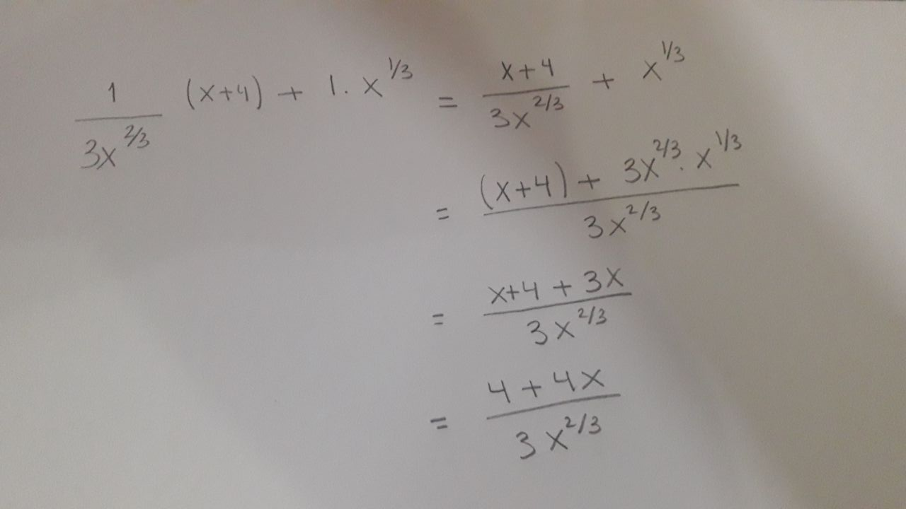
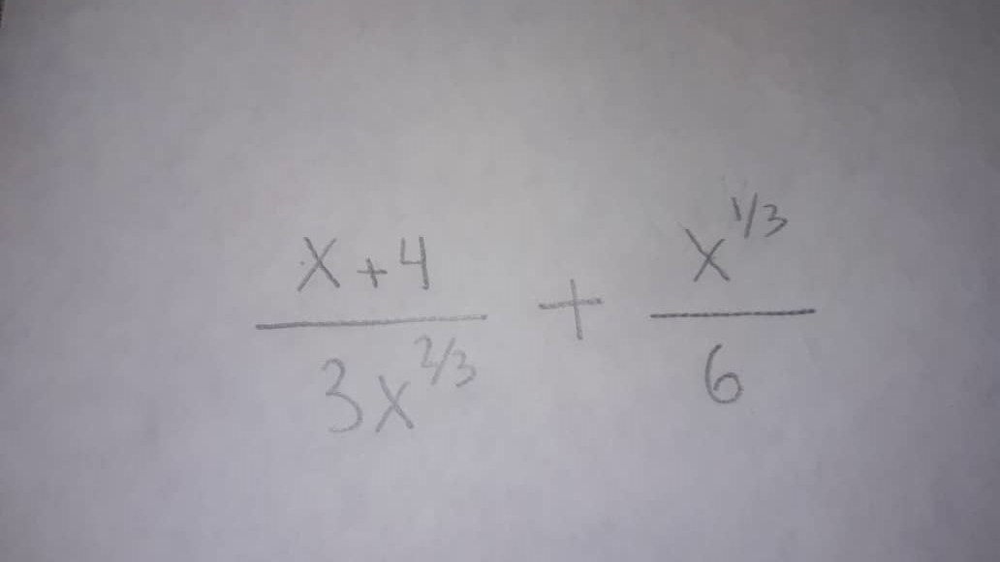

Indice
Pregunta 1

Respuesta 1

Pistas
¿Cómo sumar fracciones?
- Las llevo al mismo denominador
- En este caso como son dos fracciones y una de ellas tiene denominador 1, puedo multiplicar cruzado y dejar como denominador comun el producto de los denominadores
- Sumo los numeradores
Tarea 1

Indice